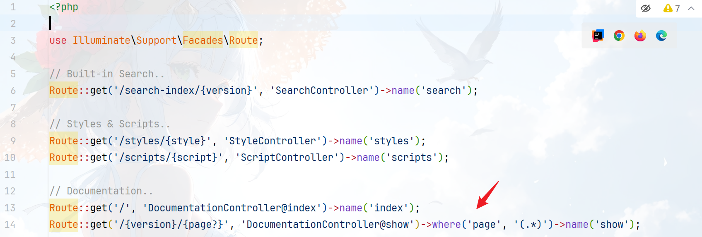
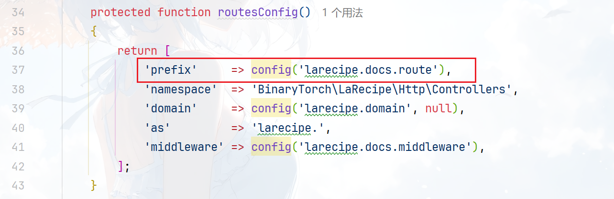
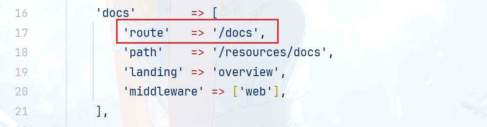
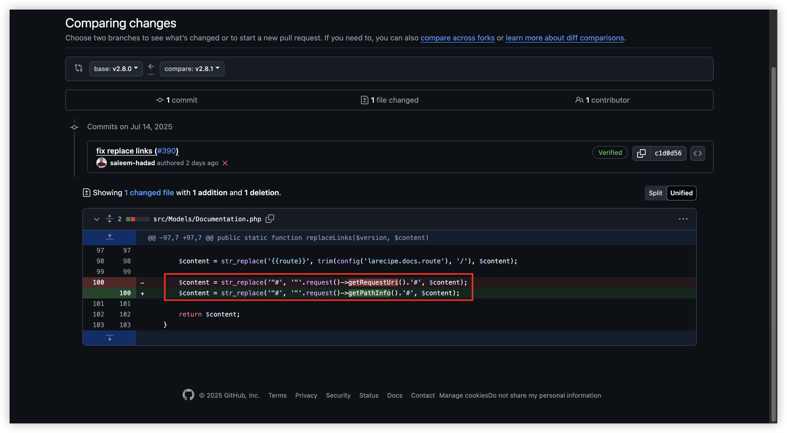

CVE-2025-53833 LaRecipe 服务端模板注入漏洞
漏洞信息
漏洞名称：Laravel LaRecipe 服务器端模板注入漏洞
产品介绍：LaRecipe 是一款专为 Laravel 框架设计的现代化文档生成工具，其核心定位是帮助开发者快速构建美观、可交互的技术文档系统。该组件采用 MIT 许可证开源，目前由 Binary Torch 团队维护，在 packagist.org 统计的安装量达234万+，表明其在 Laravel 生态中已成为主流文档解决方案。271个 fork 和 2.5k 星标显示较强的社区影响力。LaRecipe 广泛应用于各类 Laravel 项目的文档系统构建，支持 Markdown 语法、代码高亮、搜索功能等特性。
项目地址：https://github.com/saleem-hadad/larecipe
影响版本：< 2.8.1
自动化扫描的一个漏洞，因为很少遇到 PHP 的模板注入所以看一下。
{kind=link}
漏洞分析
漏洞点在 src/Traits/HasBladeParser.php 直接搜索 eval 就可以搜索到：
[1] 处的 compileBlade 是由 Blade（ Laravel 框架的模板引擎）编译 PHP 代码，然后 [2] 位置使用 eval 执行代码，由于 $content 用户可控，所以导致模板注入漏洞。
向上找调用位置：src/Models/Documentation.php Documentation:get
[4] 处乍一看是获取 md 文件的路径然后 [5] 处判断文件是否存在，可仔细看后其实是 base_path 也就是只有路径并不是非得有文件存在才行，所以版本对的话就应该是可以的。
随后在 [6] 处的 replaceLinks 中会做一些替换，如下：
继续向上：src/DocumentationRepository.php DocumentationRepository:get
最后跟进到 src/Http/Controllers/DocumentationController.php
DocumentationController:show
到了控制器，然后寻找对应的路由：   routes/LaRecipe.php
/{version}/{page?} ，不过无法直接访问，在 Laravel 框架中 ServiceProvider 服务提供者注册任何事件监听器、路由或者任何其他功能。
在 LaRecipe 中定义了路由前缀：
src/LaRecipeServiceProvider.php
publishable/config/larecipe.php
/docs/{version}/{page?}
整个流程就串起来了：
{kind=link}
{kind=link}
{kind=link}
/docs/{version}/{page?}DocumentationController:show($version, $page = null)DocumentationRepository:get($version, $page = null, $data = [])$this->sectionPage = $page ?: config('larecipe.docs.landing');$this->documentation->get($version, $this->sectionPage, $data);$parsedContent = $this->replaceLinks($version, $parsedContent)$content = str_replace('"#', '"'.request()->getRequestUri().'#', $content);$this->renderBlade($parsedContent, $data)$content = $this->compileBlade($contenteval('?'.'>'.$content);
在 6.1 步中解析的 content 是通过拼接 request()->getRequestUri() 来实现的，那么只需要在路由的 page 部分写上 payload 就可以被膜拜渲染为 php 代码后被 eval 执行。 Payload：
修复方案
在官方 2.8.1 的对比中可以看到把 getRequestUri 更换为 getPathInfo ，在上面的 6.1 步就无法将 payload 带入 content 了。

{kind=link}